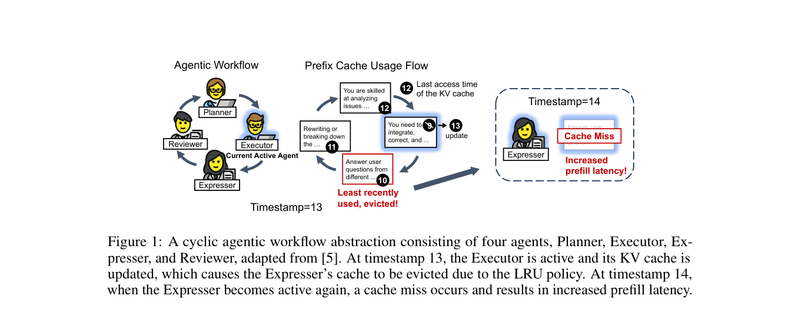
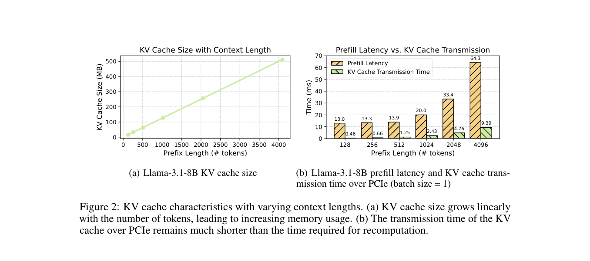
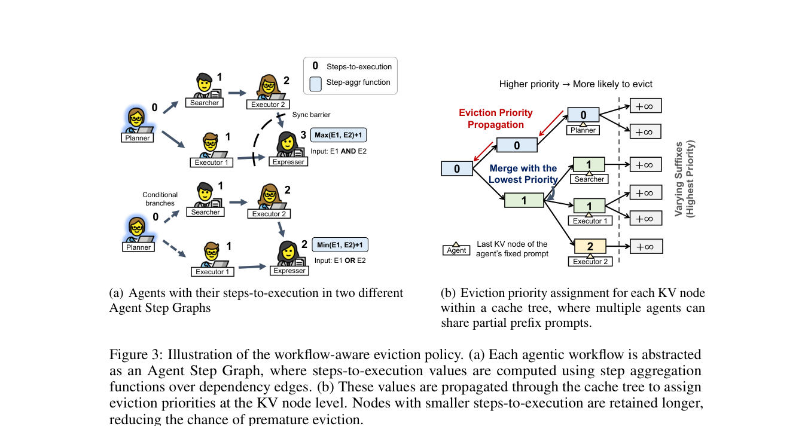
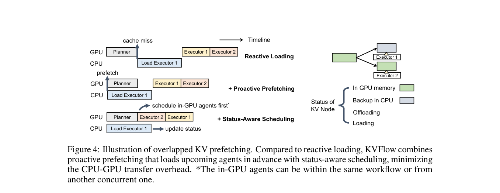
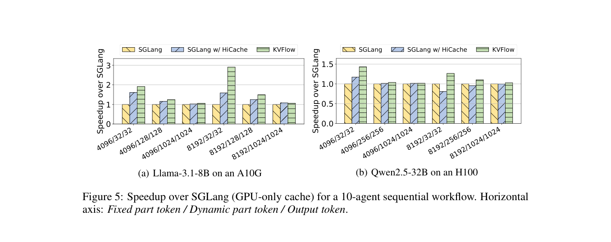
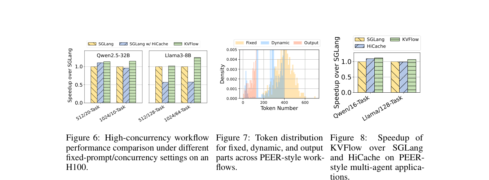

KVFlow: Efficient Prefix Caching for Accelerating LLM-Based Multi-Agent Workflows（NeurIPS 2025）
Background / Motivation
多 Agent 工作流中的每个 Agent 通常带有固定角色 Prompt，包括身份、职责、行为规则和 few-shot 示例。同一 Agent 被反复调用时，这部分 Prompt 的 KV Cache 可以跨调用复用，从而跳过重复 Prefill。
现有 SGLang 等系统把 prefix KV 组织成 radix tree，并在 GPU 空间不足时按 LRU 淘汰。然而，最近是否访问过，不等于下一次是否很快使用。

以循环工作流为例：
Planner -> Executor -> Expresser -> Reviewer -> Planner -> ...Executor 运行时，Expresser 因为较久没有访问，可能成为 LRU 淘汰对象；但 Expresser 恰好就是下一步。它随后发生 cache miss，需要重新 Prefill 或从 CPU 反应式加载。相反，刚完成的 Executor 虽然时间戳最新，却可能要到下一轮才复用。
因此论文要解决的问题是：
已知 Agent 工作流依赖时，怎样用“离下一次执行还有多远”代替历史访问时间，保留更可能在近期复用的 prefix KV，并将不可避免的 CPU-GPU 换入延迟隐藏在其他 Agent 的执行过程中？
Key Insight
- 工作流提供了 LRU 缺少的未来信息。 系统可以从依赖关系估计每个 Agent 距离下一次执行还有多少 step。
- 淘汰粒度应是 KV tree node，而不是整个 Agent。 不同 Agent 可能共享部分固定前缀；一个节点只要仍被某个近期 Agent 需要，就应继续保留。
- 从 CPU 换入通常比重新 Prefill 更便宜。 对 Llama-3.1-8B，prefix 从 128 增至 4096 token 时，Prefill 从 13.0 ms 增至 64.3 ms，论文测得的 PCIe 传输则从 0.46 ms 增至 9.39 ms。
- 已知下一 Agent 后，传输可以前移。 当前 Agent 在 GPU 执行时，后台线程可以同时把下一 Agent 的 KV 从 CPU 换入 GPU。

Core Design
1. Agent Step Graph 与 Steps-to-Execution
KVFlow 将工作流抽象为 Agent Step Graph：节点表示一次 Agent invocation，边表示依赖关系。当前可执行 Agent 的 steps-to-execution 为 0，其他 Agent 的值由前驱和 step aggregation function 递归得到。

不同依赖语义使用不同聚合函数：
| 依赖语义 | 聚合函数 | 含义 |
|---|---|---|
| AND / synchronization barrier | max(E1, E2) + 1 | 必须等待最晚完成的前驱 |
| OR / conditional branch | min(E1, E2) + 1 | 任一分支完成即可触发 |
例如当前 Planner 的值为 0，下一步可运行的 Searcher 和 Executor 1 为 1；依赖 Searcher 的 Executor 2 为 2。值越小，代表 Agent 越接近执行，其 prefix KV 越值得保留。
需要注意，这个值描述的是 Agent 最早可能在哪一步执行。它不是 wall-clock time，也没有建模 Agent 执行成本、分支概率和关键路径 slack。论文称之为 Agent Step Graph，而非直接使用普通 DAG，是因为每个节点还带有 AND/OR 等 step aggregation semantics。
2. Workflow-Aware KV Node Eviction
SGLang 的 prefix cache 是树结构，多个 Agent 可以共享祖先节点。KVFlow 按以下方式把 Agent 的 step 信息映射到 KV 节点：
- 找到每个 Agent 固定 Prompt 的最后一个 KV node，将该 Agent 的 steps-to-execution 写入该节点。
- 从叶子向根传播优先级；父节点被多个 Agent 共享时，取所有相关子节点中的最小值。
- GPU 内存不足时，优先淘汰数值更大的节点，即离执行更远的 Agent KV。
- 动态 suffix 随任务变化且通常无法复用，因此统一赋值正无穷，最先淘汰。
取最小值是一种保守策略：只要某个即将执行的 Agent 仍需要共享节点，该节点就不会因为另一个较远 Agent 的优先级而被换出。多个并发工作流共享 prefix 时也采用相同规则。
3. Proactive Prefetching
workflow-aware eviction 能减少错误淘汰，但显存有限时仍无法保留所有 KV。KVFlow 将被淘汰 Agent 的固定 prefix KV 备份到 CPU，并根据 Step Graph 提前加载下一步可能执行的 Agent。

反应式加载会形成以下关键路径：
Planner 完成 -> 发现 Executor 1 miss -> CPU 加载 KV -> Executor 1 运行主动预取则将 Planner 的 GPU 执行与 Executor 1 的 CPU-to-GPU load 并行。分支场景下，KVFlow 在预设的并发预取上限内，保守地预取下一步所有可能执行的 Agent。
4. Status-Aware Scheduling
如果当前 Agent 很快结束，而目标 KV 尚未传完，仅靠提前预取仍可能阻塞。KVFlow 为每个 KV node 维护四种状态：
| 状态 | 含义 |
|---|---|
| in GPU memory | 已经可以使用 |
| backup in CPU | GPU 中不存在，但 CPU 有备份 |
| loading | 正从 CPU 换入 GPU |
| offloading | 正从 GPU 备份到 CPU |
调度器遇到所需 KV 仍为 loading 的请求时，暂时跳过它，先执行 KV 已在 GPU 的其他 ready Agent。这些 Agent 可以来自同一工作流，也可以来自其他并发工作流。后台 load 完成并更新状态后，原请求才重新具备可调度资格。处于 offloading 的节点不会再次参与淘汰，避免内存回收竞态。
KVFlow 在这里确实改变了局部请求选择，但目标是隐藏 KV 传输，不是根据 DAG 计算应用级关键路径优先级。
5. SGLang 实现
原型基于 SGLang v0.4.4，同时修改 frontend 和 backend：
- 假设每个 sgl.function 对应一个 Agent；frontend 在 HTTP 请求中携带 client ID、当前 Agent 身份和所有 Agent 的 steps-to-execution。
- backend 使用这些元数据更新 radix tree 的淘汰优先级，并在可淘汰 GPU 空间足够时触发预取。
- 固定 Prompt 的结束位置可以由用户显式标记，也可以根据 cache hit 历史推断持续命中的 prefix。
- client ID 用于区分不同工作流中可能重名的 Planner、Executor 等 Agent。
Experiment
1. 单工作流
| 项目 | 设置 |
|---|---|
| Workflow | 10 个顺序执行的 Agent；batch size=1 |
| 执行方式 | warm up 固定 prefix 后，执行工作流 10 次并取平均 latency |
| Prompt | 合成 token；分别控制 Fixed / Dynamic / Output 长度 |
| 平台 1 | Llama-3.1-8B，A10G 24GB，PCIe Gen1 2GB/s |
| 平台 2 | Qwen2.5-32B，H100 80GB，PCIe Gen5 64GB/s |
| Baseline 1 | SGLang GPU-only：cache miss 后重新计算 |
| Baseline 2 | SGLang w/ HiCache：CPU 二级缓存、反应式换入与 layer-wise pipeline |
| 解码 | temperature=0，greedy sampling |
论文刻意使用 4096 和 8192 token 的长固定 prefix，使 GPU 空间不足并触发淘汰。

在 A10G、8192/32/32（Fixed / Dynamic / Output）配置下：
| 比较对象 | KVFlow speedup |
|---|---|
| SGLang GPU-only | 2.91× |
| SGLang w/ HiCache | 1.83× |
HiCache 已经避免重新 Prefill，但反应式 load 仍暴露在关键路径上；KVFlow 再用预取和 ready-request 调度覆盖传输。固定 prefix 越长，cache miss 越贵，收益越明显。Output token 增多后，Decode 占总时间的比例上升，prefix 管理可优化的部分变小。
2. 高并发工作流
高并发实验在单张 H100 （？都不涉及跨卡通信）上同时启动多个互不交互、互不共享的工作流。Dynamic 和 Output 均为 256 token，配置为：
| 模型 | Fixed / 并发工作流数 |
|---|---|
| Qwen2.5-32B | 512/20-task、1024/10-task |
| Llama3-8B | 512/128-task、1024/64-task |

结果需要按 baseline 区分：
- 相比 GPU-only SGLang，KVFlow 最高提升 1.25×。
- 相比 LRU + reactive loading 的 HiCache，KVFlow 最高提升 2.19×。
- 1024 fixed / 64-task 时，HiCache 只有 GPU-only SGLang 的 0.57×。论文认为频繁反应式换入破坏了调度-计算流水线，碎片化 KV 布局也没有充分利用 PCIe 带宽。
3. PEER 风格真实负载模拟
论文基于 PEER Financial QA 模板构造四 Agent 工作流。不同工作流的 Prompt 有随机差异，同一应用上下文又会产生部分共享 prefix。
这组 Prompt 主要只有几十到数百 token，远短于 4K/8K 合成压力测试。KVFlow 相比 GPU-only SGLang 最高提升 1.12×，相比 HiCache 最高提升 1.08×。在更现实但 prefix 较短的负载中仍有收益，不过幅度明显减小。
Restriction
- KVFlow 依赖 frontend 提供 Agent 身份和工作流 step 信息；对执行路径完全自主、无法提前枚举下一 Agent 的程序，适用性会减弱。
- steps-to-execution 只计算拓扑步数，没有考虑 Agent 耗时、关键路径 slack、分支概率、prefix 大小或换入收益。
- OR 分支会预取所有下一步候选，可能浪费 PCIe 带宽和 GPU cache；论文只通过并发预取数量上限控制。
- 若当前 Agent 很短且没有其他 ready 请求，status-aware scheduling 找不到可插入的工作，load 延迟仍会暴露在关键路径上。
- 单工作流实验主要使用 10-Agent 合成顺序图和 batch size=1；高并发工作流被设为互不交互、互不共享，而且并发度没有高到 active request 吃光全部显存。
- 只验证了单 GPU，没有跨卡通信。 Llama-3.1-8B/A10G 与 Qwen2.5-32B/H100 实验均使用单卡，论文中的通信仅为 CPU RAM 与单张 GPU 之间的 PCIe 传输。它没有评估 Tensor Parallel 下分片 KV 的协调预取、Pipeline Parallel 下各 stage 的加载时序与 pipeline bubble、多副本之间的 cache-aware routing 和 KV 迁移，也没有考虑 NVLink、InfiniBand、NUMA 与多 GPU 共享 PCIe/主机内存带宽造成的竞争。因此，不能直接推广到多 GPU 或跨节点 serving。
与 DAG-aware Scheduling 的关系
Parrot、Ayo 和 Agentix 主要回答看到请求之间的依赖后，应该如何推进整张应用图；KVFlow 回答的是另一个问题：
已经知道工作流接下来可能运行谁后，如何让 GPU 内存层级提前为这些 Agent 准备好 prefix KV？
因此它在 DAG-aware serving 中更适合作为 graph-informed KV management 子方向。
KVFlow 目前只用拓扑 step 排序。进一步可以联合 critical-path urgency、branch probability、avoided prefill cost 和 KV footprint，判断一个 Agent 的 prefix 是否真正值得占用 GPU：
cache value =
critical-path urgency
× branch probability
× avoided prefill cost
/ KV memory footprint例如，一个 Agent 完成后会解锁多个下游节点，即使它不是下一 step，也可能比只服务单一下游的 Agent 更值得预取。相反，低概率分支的大 prefix 不应仅因为 steps-to-execution=1，就与确定执行的关键路径 Agent 获得相同资源。